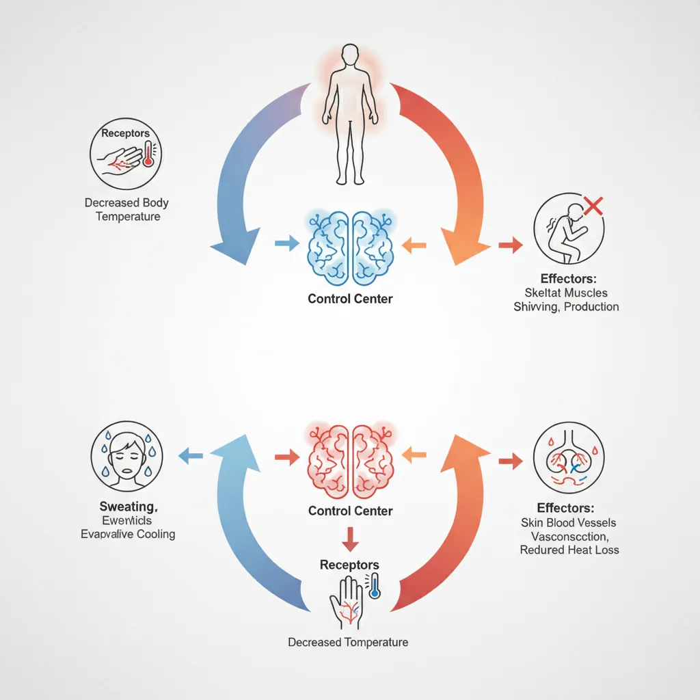
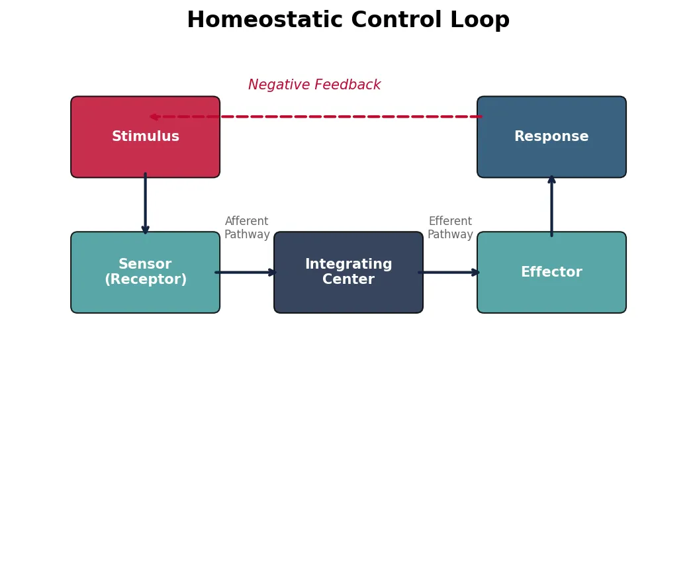
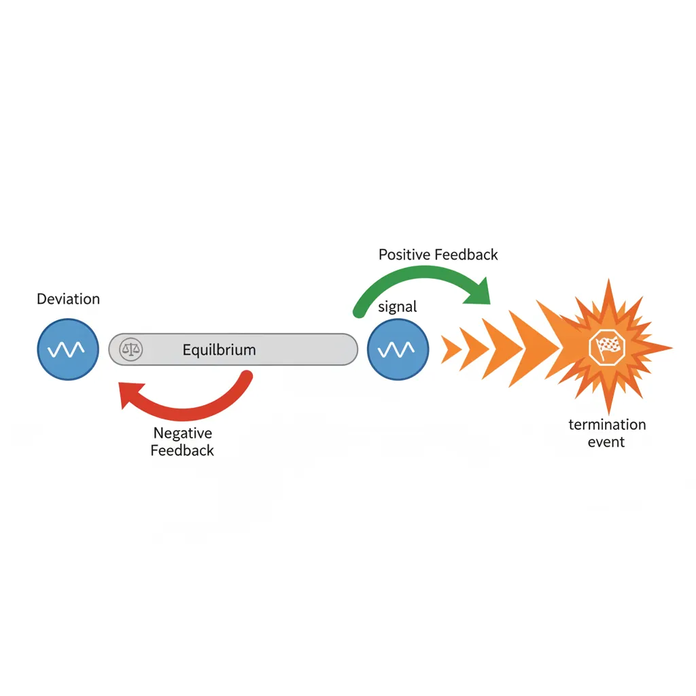
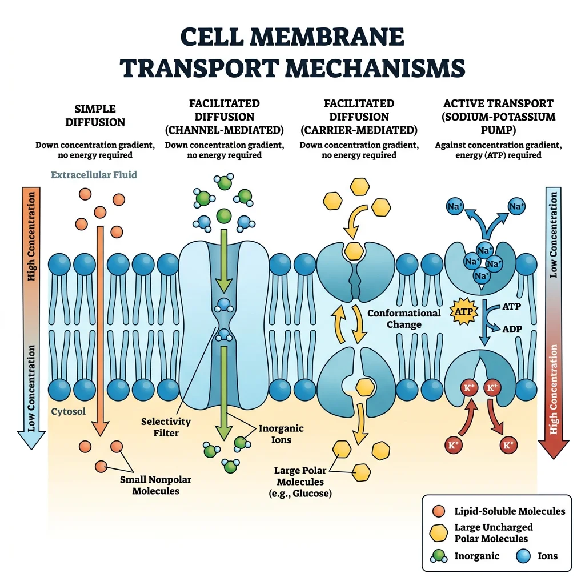
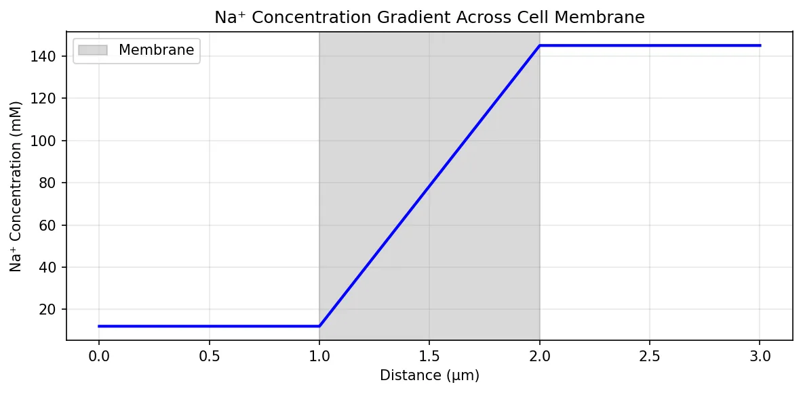
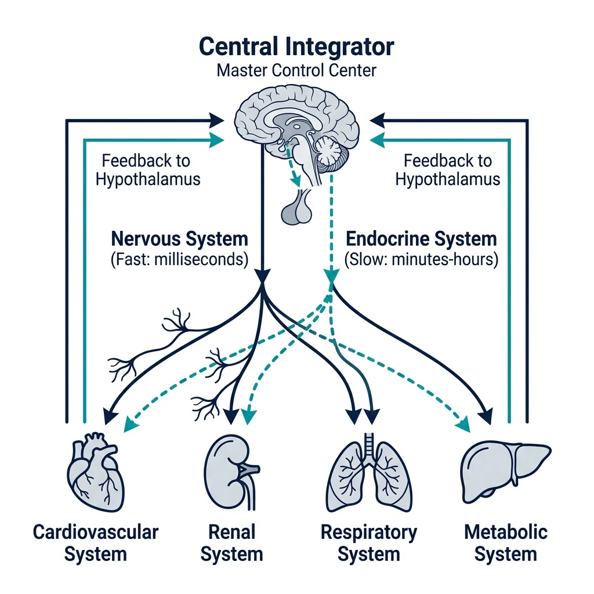
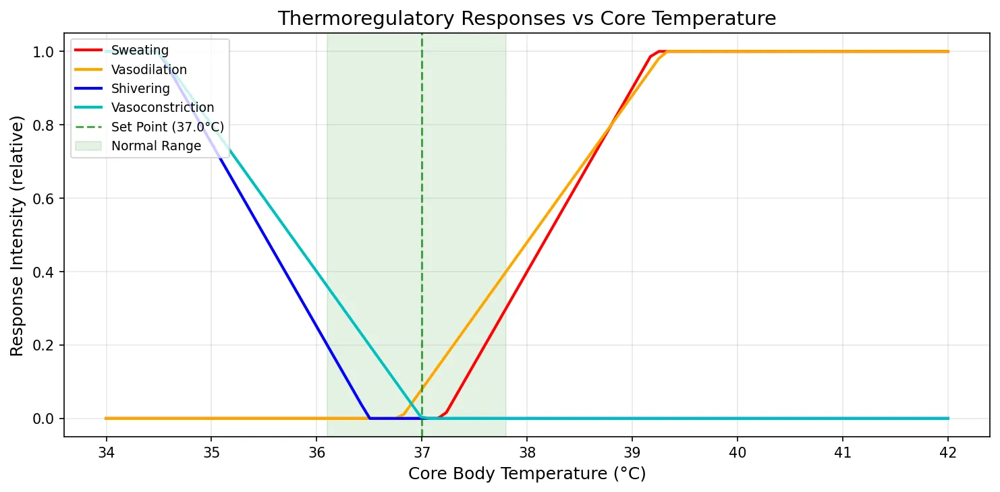
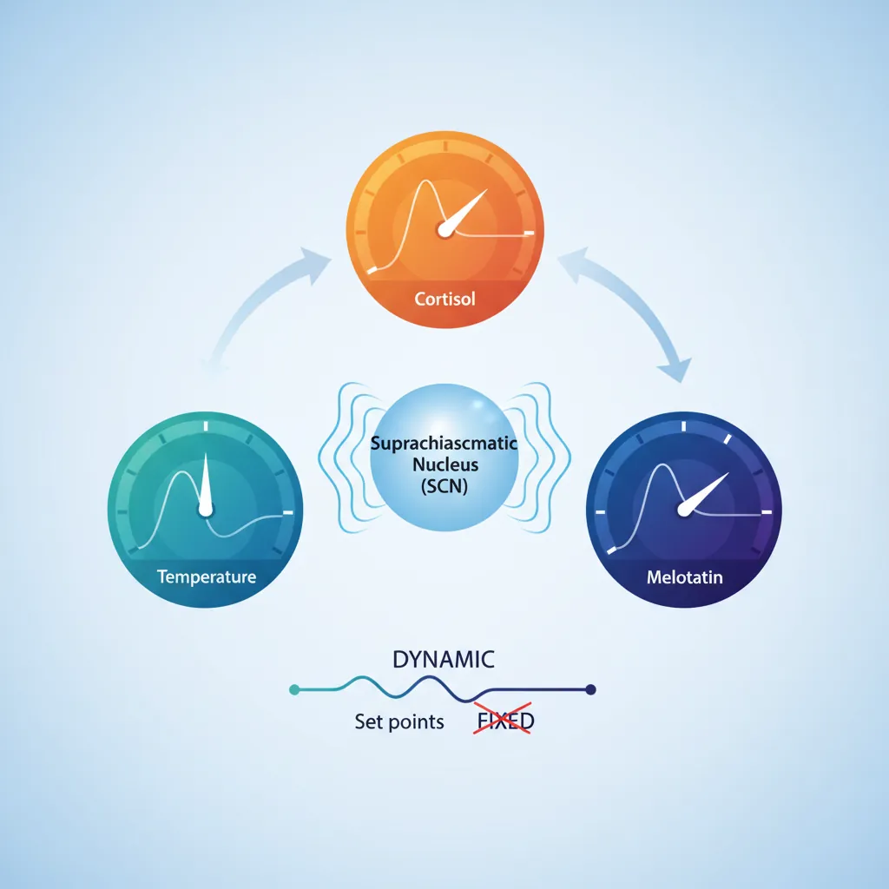
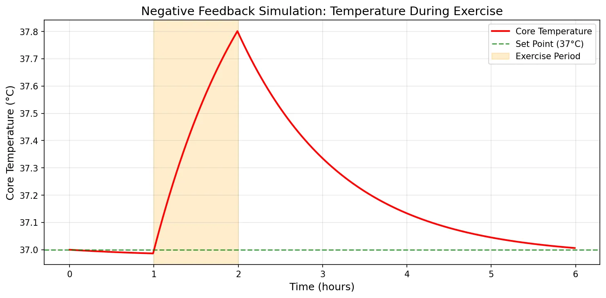

Physiology Mastery
Homeostasis & Feedback
Set points, feedback loops, allostasisNeurophysiology & Action Potentials
Neurons, action potentials, synapsesCardiac Electrophysiology & Hemodynamics
Heart rhythm, hemodynamics, cardiac outputRespiratory Mechanics & Gas Exchange
Breathing mechanics, gas exchange, V/QRenal Physiology & Fluid Balance
Nephron function, filtration, acid-baseGI Physiology & Absorption
Motility, secretion, nutrient absorptionEndocrine Regulation & Metabolism
Hormones, thyroid, adrenal, metabolismExercise Physiology & Adaptation
Acute responses, training adaptationsCellular & Membrane Physiology
Ion transport, signaling, second messengersBlood & Immune Physiology
Hematopoiesis, coagulation, immunityReproductive & Developmental
Reproduction, pregnancy, fetal physiologyIntegrative & Clinical Physiology
Stress, shock, sepsis, agingFoundations of Homeostasis
Imagine your body as a massive, self-regulating factory with billions of workers (cells), each requiring precise working conditions — the right temperature, the correct pH, adequate oxygen, and perfectly balanced nutrients. Homeostasis is the master control system that keeps all these conditions within a narrow, life-sustaining range, despite constant internal and external disturbances.
The word itself comes from the Greek homoios (similar) and stasis (standing still), coined by American physiologist Walter Bradford Cannon in 1926. But the concept traces back even further — to the father of experimental physiology.

flowchart TD
STIM["Stimulus\n(Change in variable)"] --> SENSOR["Receptor / Sensor\n(Detects change)"]
SENSOR -->|"Afferent\nPathway"| CC["Control Center\n(Integrator)"]
CC -->|"Efferent\nPathway"| EFF["Effector\n(Muscle / Gland)"]
EFF --> RESP["Response\n(Opposes stimulus)"]
RESP -->|"Negative\nFeedback"| STIM
RESP --> SET["Return to\nSet Point"]
Every physiological variable — blood glucose, body temperature, blood pressure, blood pH, plasma osmolality — has a set point (the ideal target value) and a normal range (the acceptable band of variation). When a variable drifts outside this range, corrective mechanisms kick in to restore balance.
| Variable | Set Point | Normal Range | Consequence of Deviation |
|---|---|---|---|
| Core Temperature | 37°C (98.6°F) | 36.1–37.8°C | Hypothermia / Hyperthermia |
| Blood pH | 7.40 | 7.35–7.45 | Acidosis / Alkalosis |
| Blood Glucose | ~90 mg/dL | 70–100 mg/dL (fasting) | Hypoglycemia / Hyperglycemia |
| Blood Pressure (MAP) | ~93 mmHg | 70–105 mmHg | Hypotension / Hypertension |
| Plasma Osmolality | ~290 mOsm/kg | 275–295 mOsm/kg | Cell swelling / Cell shrinkage |
| PaO₂ | ~100 mmHg | 80–100 mmHg | Hypoxemia |
| Plasma Ca²⁺ | ~2.4 mM | 2.2–2.6 mM | Tetany / Cardiac arrhythmia |
The Internal Environment: Claude Bernard's Vision
In the 1850s, the French physiologist Claude Bernard made one of the most profound observations in the history of biology. He recognized that multicellular organisms don't directly interact with the external environment at the cellular level. Instead, cells are bathed in an internal fluid environment — what he called the milieu intérieur (internal milieu).
Historical Milestone: Claude Bernard (1813–1878)
Key Discovery: Bernard observed that the liver releases glucose into the blood — challenging the prevailing idea that only plants could make sugar. This led him to recognize that organs actively regulate the composition of blood and interstitial fluid.
Famous Quote: "La fixité du milieu intérieur est la condition de la vie libre, indépendante" — "The constancy of the internal environment is the condition for a free, independent life."
Legacy: This principle underpins every physiological system we study: the kidneys regulate fluid composition, the lungs regulate gas exchange, the liver regulates nutrients — all to maintain the milieu intérieur.
The internal environment consists of two main fluid compartments:
- Intracellular fluid (ICF): ~28 L in a 70 kg adult — the fluid inside all cells. High in K⁺, Mg²⁺, and phosphate.
- Extracellular fluid (ECF): ~14 L — includes plasma (~3 L) and interstitial fluid (~11 L). High in Na⁺, Cl⁻, and HCO₃⁻.
The ECF is what Bernard called the "internal environment" — the medium that cells actually "see." Homeostatic mechanisms work primarily to keep the ECF's composition stable.
Control System Components
Every homeostatic control loop requires three essential components, much like an engineering control system (think of a thermostat controlling room temperature):
- Sensor (Receptor): Detects the current value of the regulated variable. Example: thermoreceptors in the skin and hypothalamus detect body temperature.
- Integrating Center (Control Center): Compares the detected value with the set point and determines the appropriate response. Often the brain (hypothalamus, medulla) or an endocrine gland.
- Effector: Executes the corrective response. Can be muscles (skeletal for shivering, smooth for vasoconstriction) or glands (sweat glands, endocrine glands).
Between these components, signals travel via afferent pathways (sensor → integrator, carrying information about the current state) and efferent pathways (integrator → effector, carrying the corrective command). These can be neural (fast, precise) or hormonal (slower, widespread).
import matplotlib.pyplot as plt
import matplotlib.patches as mpatches
# Simple visualization of a homeostatic control loop
fig, ax = plt.subplots(1, 1, figsize=(10, 6))
ax.set_xlim(0, 10)
ax.set_ylim(0, 8)
ax.set_aspect('equal')
ax.axis('off')
ax.set_title('Homeostatic Control Loop', fontsize=16, fontweight='bold')
# Draw boxes
boxes = {
'Stimulus': (1, 6, 2, 1),
'Sensor\n(Receptor)': (1, 4, 2, 1),
'Integrating\nCenter': (4, 4, 2, 1),
'Effector': (7, 4, 2, 1),
'Response': (7, 6, 2, 1)
}
colors_list = ['#BF092F', '#3B9797', '#132440', '#3B9797', '#16476A']
for i, (label, (x, y, w, h)) in enumerate(boxes.items()):
rect = mpatches.FancyBboxPatch((x, y), w, h, boxstyle="round,pad=0.1",
facecolor=colors_list[i], edgecolor='black', alpha=0.85)
ax.add_patch(rect)
ax.text(x + w/2, y + h/2, label, ha='center', va='center',
fontsize=10, fontweight='bold', color='white')
# Draw arrows
arrow_style = dict(arrowstyle='->', color='#132440', lw=2)
ax.annotate('', xy=(2, 5), xytext=(2, 6), arrowprops=arrow_style) # Stimulus -> Sensor
ax.annotate('', xy=(4, 4.5), xytext=(3, 4.5), arrowprops=arrow_style) # Sensor -> Integrator
ax.annotate('', xy=(7, 4.5), xytext=(6, 4.5), arrowprops=arrow_style) # Integrator -> Effector
ax.annotate('', xy=(8, 6), xytext=(8, 5), arrowprops=arrow_style) # Effector -> Response
# Feedback arrow
ax.annotate('', xy=(2, 6.8), xytext=(7, 6.8),
arrowprops=dict(arrowstyle='->', color='#BF092F', lw=2, linestyle='dashed'))
ax.text(4.5, 7.2, 'Negative Feedback', ha='center', fontsize=10, color='#BF092F', fontstyle='italic')
# Labels for pathways
ax.text(3.5, 5.0, 'Afferent\nPathway', ha='center', fontsize=8, color='#666')
ax.text(6.5, 5.0, 'Efferent\nPathway', ha='center', fontsize=8, color='#666')
plt.tight_layout()
plt.show()

Analogy: The Home Thermostat
Your home heating system is a perfect analogy for homeostatic control:
- Set Point: The temperature you dial in (e.g., 21°C)
- Sensor: The thermometer inside the thermostat
- Integrating Center: The thermostat's logic circuit comparing actual vs. desired temperature
- Effector: The furnace (heats) or A/C (cools)
- Feedback: As the room warms, the sensor detects the change and the furnace shuts off
The body works the same way — except it has thousands of these loops running simultaneously, many interacting with each other!
Feedback Types
The body employs three major strategies for regulation: negative feedback (the most common), positive feedback (rare but crucial), and feedforward regulation (anticipatory control). Understanding these mechanisms is essential because virtually every disease involves a failure or disruption of one or more feedback loops.

Negative Feedback Loops
Negative feedback is the workhorse of physiological regulation, responsible for approximately 95% of all homeostatic control. In negative feedback, the response opposes the initial change, pushing the variable back toward the set point. The word "negative" doesn't mean "bad" — it means the output negates (reverses) the input.
Case Study: Blood Glucose Regulation
After a Meal (Blood Glucose Rises Above ~90 mg/dL):
- Sensor: Beta cells of the pancreatic islets detect rising glucose
- Integrator: Beta cells themselves (they are both sensor and integrator)
- Effector: Beta cells secrete insulin
- Response: Insulin promotes glucose uptake into muscle and adipose tissue, stimulates glycogen synthesis in liver → glucose falls back toward 90 mg/dL
During Fasting (Blood Glucose Falls Below ~90 mg/dL):
- Sensor: Alpha cells detect falling glucose
- Effector: Alpha cells secrete glucagon
- Response: Glucagon stimulates glycogenolysis and gluconeogenesis in the liver → glucose rises back toward 90 mg/dL
Clinical Failure: In Type 1 diabetes, autoimmune destruction of beta cells eliminates insulin production — the negative feedback loop is broken. Blood glucose rises unchecked after meals, leading to hyperglycemia, ketoacidosis, and long-term vascular damage.
Other classic examples of negative feedback include:
- Blood pressure regulation: Baroreceptors detect high BP → medulla reduces sympathetic tone → heart rate drops, vessels dilate → BP falls
- Thyroid hormone regulation: High T3/T4 → hypothalamus reduces TRH → pituitary reduces TSH → thyroid reduces hormone output
- Calcium regulation: High Ca²⁺ → parathyroid reduces PTH → reduced bone resorption and renal reabsorption → Ca²⁺ falls
Positive Feedback Loops
Positive feedback amplifies the initial change rather than opposing it — the response reinforces the stimulus, pushing the system further from its starting state. This sounds dangerous (and can be), which is why the body uses it only in specific situations that require a rapid, self-reinforcing cascade to reach completion.
| Example | Trigger | Amplification | Termination Event |
|---|---|---|---|
| Childbirth (Oxytocin) | Fetal head presses on cervix | Stretch → oxytocin → stronger contractions → more stretch → more oxytocin | Delivery of the baby removes the stretch stimulus |
| Blood Clotting | Vessel injury exposes collagen | Activated factor → activates more factors → exponential cascade | Clot seals the wound; anticoagulant factors limit spread |
| Action Potential Upstroke | Membrane reaches threshold (−55 mV) | Na⁺ channels open → depolarization → more Na⁺ channels open | Na⁺ channels inactivate; K⁺ channels open → repolarization |
| Ovulation (LH Surge) | Rising estrogen from dominant follicle | High estrogen → switches from negative to positive feedback on LH → LH surge | Ovulation occurs; corpus luteum shifts hormone balance |
Feedforward Regulation
Feedforward regulation is an anticipatory mechanism — the body initiates a response before the disturbance actually happens, based on prediction or learned patterns. This is fundamentally different from feedback, which is always reactive (responding after a change has already occurred).
Think of it like grabbing a coat before stepping outside on a winter morning — you don't wait to get cold first; you anticipate the cold based on experience. In engineering terms, feedforward is like a thermostat that checks the weather forecast and pre-heats your house before the temperature drops, rather than waiting until the room gets cold.
How Feedforward Works — The Neural Pathway
Feedforward requires three essential ingredients that distinguish it from simple reflexes:
- A detector or sensory input — something that senses a predictive cue (not the actual disturbance). For example, the sight of food, not the food itself entering the stomach.
- A processing center (usually the brain) — the cerebral cortex, hypothalamus, or brainstem integrates the cue with past experience or learned associations to predict what will happen next.
- A pre-emptive effector response — the body activates effectors (glands, muscles, organs) in advance to prepare for the anticipated change.
Crucially, feedforward requires learning or prior experience. A newborn infant doesn't salivate at the sight of food — this response is learned. This is why feedforward is sometimes called anticipatory regulation or predictive homeostasis.
Examples of Feedforward Regulation
- Cephalic phase of digestion: Seeing, smelling, or thinking about food triggers gastric acid secretion and salivation before food enters the stomach. Pavlov's famous experiments demonstrated this beautifully — his dogs learned to salivate at the sound of a bell associated with feeding.
- Exercise anticipation: Heart rate and ventilation begin increasing seconds before exercise starts — the motor cortex sends parallel signals to cardiovascular and respiratory centers. This is called central command, and it explains why your heart races at the starting line before the gun fires.
- Pupillary constriction: When focusing on a near object, pupils constrict before the image becomes blurred — the visual cortex predicts the need for a smaller aperture.
- Insulin secretion (incretin effect): The incretin hormones (GLP-1, GIP) released from the gut during a meal stimulate insulin secretion even before blood glucose rises significantly — a "feedforward" boost. This is why oral glucose produces a larger insulin response than the same dose given intravenously.
- Shivering before cold exposure: When you see snow outside or step toward a cold environment, your muscles may begin slight contraction before your core temperature has actually dropped.
- Postural adjustments: Before lifting a heavy object, your brain activates core stabilizer muscles milliseconds before the arms engage — an anticipatory postural adjustment (APA) that prevents loss of balance.
Feedforward vs. Feedback — Side-by-Side Comparison
| Feature | Feedforward | Negative Feedback |
|---|---|---|
| Timing | Acts before the disturbance occurs | Acts after the disturbance is detected |
| Speed | Very fast — no waiting for error signal | Slower — must detect deviation first |
| Precision | Lower — predictions can be wrong | Higher — corrects based on actual data |
| Requires Learning? | Usually yes — based on experience | No — hardwired sensor-effector loops |
| Error Correction | Cannot self-correct if prediction is wrong | Self-correcting — adjusts until set point is restored |
| Analogy | Checking the forecast and grabbing an umbrella | Getting wet and then opening an umbrella |
| Prevalence | Less common — supplementary role | Dominant mechanism (~95% of regulation) |
Cellular Homeostasis
All system-level homeostasis ultimately serves one purpose: maintaining the right conditions for cells to function. But cells themselves also have their own internal homeostatic mechanisms — regulating what crosses their membranes, maintaining ion gradients, and controlling intracellular pH. These cellular mechanisms are the foundation on which organ-system physiology is built.

Membrane Transport
The cell membrane is a selective barrier — a phospholipid bilayer studded with proteins that act as channels, carriers, and pumps. Understanding membrane transport is critical because every homeostatic variable (Na⁺, K⁺, Ca²⁺, glucose, water) must cross membranes to be regulated.
| Transport Type | Energy Required? | Direction | Examples |
|---|---|---|---|
| Simple Diffusion | No (passive) | Down concentration gradient | O₂, CO₂, steroid hormones across lipid bilayer |
| Facilitated Diffusion | No (passive) | Down gradient, via protein | Glucose (GLUT transporters), ion channels (K⁺ leak) |
| Osmosis | No (passive) | Water moves toward higher solute | Water across aquaporins in kidney tubules |
| Primary Active Transport | Yes (ATP directly) | Against gradient | Na⁺/K⁺-ATPase (3 Na⁺ out, 2 K⁺ in per ATP) |
| Secondary Active Transport | Yes (indirectly via Na⁺ gradient) | One ion down, one substance up | SGLT1 (Na⁺-glucose cotransport), Na⁺/H⁺ exchanger |
| Vesicular Transport | Yes (ATP) | Bulk movement | Endocytosis, exocytosis, neurotransmitter release |
The single most important active transporter in the body is the Na⁺/K⁺-ATPase (sodium-potassium pump). It consumes roughly 30% of the body's total ATP at rest, maintaining the steep Na⁺ and K⁺ gradients that are essential for nerve signaling, muscle contraction, and secondary active transport.
import numpy as np
import matplotlib.pyplot as plt
# Simulate diffusion across a membrane
# Fick's First Law: J = -D * (dC/dx)
# Simple 1D diffusion model
D = 1e-9 # Diffusion coefficient (m²/s) — typical for small molecules
dx = 1e-6 # Membrane thickness (1 µm)
C_outside = 145 # mM (extracellular Na+ concentration)
C_inside = 12 # mM (intracellular Na+ concentration)
# Calculate flux
flux = -D * (C_inside - C_outside) / dx
print(f"Diffusion coefficient: {D} m²/s")
print(f"Membrane thickness: {dx*1e6} µm")
print(f"Concentration gradient: {C_outside} → {C_inside} mM")
print(f"Net diffusion flux: {flux:.2e} mol/(m²·s)")
print(f"Direction: {'Inward (into cell)' if flux > 0 else 'Outward'}")
# Visualize concentration profile
x = np.linspace(0, 3*dx, 100)
# Inside cell: x < dx, membrane: dx to 2dx, outside: > 2dx
C = np.piecewise(x,
[x < dx, (x >= dx) & (x <= 2*dx), x > 2*dx],
[C_inside, lambda x: C_inside + (C_outside - C_inside) * (x - dx) / dx, C_outside])
plt.figure(figsize=(8, 4))
plt.plot(x * 1e6, C, 'b-', linewidth=2)
plt.axvspan(dx*1e6, 2*dx*1e6, alpha=0.3, color='gray', label='Membrane')
plt.xlabel('Distance (µm)')
plt.ylabel('Na⁺ Concentration (mM)')
plt.title("Na⁺ Concentration Gradient Across Cell Membrane")
plt.legend()
plt.grid(True, alpha=0.3)
plt.tight_layout()
plt.show()

Ion Gradients & Electrochemical Balance
Cells maintain dramatically different ion concentrations inside versus outside. This asymmetry is not random — it is actively maintained and biologically crucial. The concentration gradients store energy (like a battery) that the cell uses for signaling, transport, and volume regulation.
| Ion | Intracellular (mM) | Extracellular (mM) | Equilibrium Potential | Primary Role |
|---|---|---|---|---|
| Na⁺ | 12 | 145 | +67 mV | Action potentials, secondary transport |
| K⁺ | 155 | 4 | −98 mV | Resting membrane potential, repolarization |
| Ca²⁺ | 0.0001 | 2.4 | +129 mV | Signaling, muscle contraction, secretion |
| Cl⁻ | 4 | 120 | −90 mV | Inhibitory signaling, volume regulation |
| HCO₃⁻ | 12 | 24 | −18 mV | pH buffering |
The Nernst equation calculates the equilibrium potential for a single ion — the membrane voltage at which the electrical force on the ion exactly balances the concentration gradient, so there's no net ion movement:
At 37°C, this simplifies to: $E_{ion} = \frac{61.5}{z} \log_{10} \frac{[ion]_{out}}{[ion]_{in}}$ mV
Where z = valence of the ion (+1 for Na⁺, K⁺; +2 for Ca²⁺; −1 for Cl⁻)
import numpy as np
# Nernst Equation Calculator
# E = (RT/zF) * ln([out]/[in])
# At 37°C: E = (61.5/z) * log10([out]/[in]) mV
R = 8.314 # J/(mol·K)
T = 310 # K (37°C)
F = 96485 # C/mol
ions = {
'Na+': {'z': 1, 'out': 145, 'in': 12},
'K+': {'z': 1, 'out': 4, 'in': 155},
'Ca2+': {'z': 2, 'out': 2.4, 'in': 0.0001},
'Cl-': {'z': -1, 'out': 120, 'in': 4},
}
print("Nernst Equilibrium Potentials at 37°C")
print("=" * 50)
for ion, vals in ions.items():
z = vals['z']
E = (R * T / (z * F)) * np.log(vals['out'] / vals['in'])
E_mV = E * 1000 # Convert to mV
print(f"{ion:6s} [{vals['out']:>6.1f}]out / [{vals['in']:>7.4f}]in → E = {E_mV:+.1f} mV")
# Goldman-Hodgkin-Katz (GHK) equation for resting potential
# Vm = (RT/F) * ln( (P_Na*[Na]o + P_K*[K]o + P_Cl*[Cl]i) /
# (P_Na*[Na]i + P_K*[K]i + P_Cl*[Cl]o) )
P_K = 1.0 # Relative permeability (reference)
P_Na = 0.04 # Na+ permeability ~4% of K+
P_Cl = 0.45 # Cl- permeability ~45% of K+
numerator = P_Na*145 + P_K*4 + P_Cl*4
denominator = P_Na*12 + P_K*155 + P_Cl*120
Vm = (R * T / F) * np.log(numerator / denominator)
print(f"\nGHK Resting Membrane Potential: {Vm*1000:+.1f} mV")
print(f"(Using P_Na:P_K:P_Cl = {P_Na}:{P_K}:{P_Cl})")
pH Regulation & Buffers
Blood pH is one of the most tightly regulated variables in the body — maintained at 7.40 ± 0.05. Even small deviations can denature proteins, alter enzyme activity, and disrupt cellular function. The body uses three lines of defense, each operating at different speeds:
- Chemical Buffers (seconds): Bicarbonate, phosphate, and protein buffer systems instantly neutralize acids/bases
- Respiratory Compensation (minutes): Adjusting ventilation rate changes CO₂ levels, which shifts the bicarbonate equation
- Renal Compensation (hours–days): Kidneys excrete or reabsorb H⁺ and HCO₃⁻ for long-term pH correction
The bicarbonate buffer system is the most important extracellular buffer because both its components are independently regulated — CO₂ by the lungs and HCO₃⁻ by the kidneys:
CO₂ + H₂O ⇌ H₂CO₃ ⇌ H⁺ + HCO₃⁻
The Henderson-Hasselbalch equation describes this equilibrium:
$pH = 6.1 + \log_{10} \frac{[HCO_3^-]}{0.03 \times P_{CO_2}}$
import numpy as np
# Henderson-Hasselbalch Equation: pH = 6.1 + log10([HCO3-] / (0.03 * PCO2))
# Normal values: HCO3- = 24 mEq/L, PCO2 = 40 mmHg
def calculate_ph(hco3, pco2):
"""Calculate blood pH using Henderson-Hasselbalch equation."""
return 6.1 + np.log10(hco3 / (0.03 * pco2))
# Normal arterial blood
normal_hco3 = 24 # mEq/L
normal_pco2 = 40 # mmHg
pH_normal = calculate_ph(normal_hco3, normal_pco2)
print(f"Normal arterial pH: {pH_normal:.2f}")
print(f" HCO3⁻ = {normal_hco3} mEq/L, PCO₂ = {normal_pco2} mmHg")
# Simulate acid-base disorders
disorders = {
'Metabolic Acidosis': {'hco3': 14, 'pco2': 28}, # Low HCO3, compensatory low PCO2
'Metabolic Alkalosis': {'hco3': 36, 'pco2': 48}, # High HCO3, compensatory high PCO2
'Respiratory Acidosis': {'hco3': 28, 'pco2': 60}, # High PCO2, compensatory high HCO3
'Respiratory Alkalosis': {'hco3': 20, 'pco2': 25}, # Low PCO2, compensatory low HCO3
}
print("\n--- Acid-Base Disorders ---")
for disorder, vals in disorders.items():
ph = calculate_ph(vals['hco3'], vals['pco2'])
status = 'ACIDOTIC' if ph < 7.35 else ('ALKALOTIC' if ph > 7.45 else 'COMPENSATED')
print(f"{disorder:28s} pH = {ph:.2f} [{status}] (HCO3={vals['hco3']}, PCO2={vals['pco2']})")
System-Level Integration
Individual homeostatic loops don't operate in isolation — they are woven into an integrated network controlled by two master regulatory systems: the nervous system (fast, targeted) and the endocrine system (slow, widespread). Understanding how these systems coordinate is essential for grasping how the body responds to complex challenges like exercise, illness, or environmental extremes.

Nervous vs Endocrine Control
Both systems serve the same ultimate goal — maintaining homeostasis — but they differ dramatically in their speed, precision, and duration of action. Most physiological responses involve both systems working in concert.
| Feature | Nervous System | Endocrine System |
|---|---|---|
| Signal Type | Electrical impulses + neurotransmitters | Hormones in blood |
| Speed | Milliseconds | Seconds to hours |
| Duration | Brief (stops when signal stops) | Long-lasting (hormone persists) |
| Specificity | Highly targeted (specific neurons) | Widespread (all cells with receptor) |
| Example | Withdrawing hand from hot stove | Cortisol response to chronic stress |
| Integration | Brain & spinal cord | Hypothalamus & pituitary |
The hypothalamus is the critical bridge between these two systems. This small brain region receives neural inputs about the internal and external environment and converts them into both neural outputs (to the autonomic nervous system) and hormonal outputs (to the pituitary gland). It is the ultimate integrating center for whole-body homeostasis.
Temperature Regulation
Thermoregulation is arguably the most intuitive example of homeostasis because we can physically feel it happening. The hypothalamus acts as the body's thermostat, integrating inputs from both central (core body) and peripheral (skin) thermoreceptors.
Case Study: Heat Stroke vs Hypothermia
Heat Stroke (Core Temp > 40°C / 104°F):
- The body's cooling mechanisms become overwhelmed — sweat glands fatigue, blood volume drops from dehydration
- Core temperature spirals upward in a pathological positive feedback loop: high temp → enzyme dysfunction → impaired cooling → higher temp
- Treatment: Rapid external cooling (ice packs, cold IV fluids) — we must break the loop externally since the body can no longer do it
Hypothermia (Core Temp < 35°C / 95°F):
- Below ~34°C, shivering stops — the very mechanism designed to generate heat fails
- Below ~30°C, the hypothalamus loses its regulatory ability — another positive feedback spiral toward death
- Treatment: Gradual rewarming (too-fast rewarming can cause lethal cardiac arrhythmias due to cold blood returning from extremities)
Clinical Pearl: "You're not dead until you're warm and dead" — hypothermic patients may appear to have no vital signs but can sometimes be resuscitated after careful rewarming.
import numpy as np
import matplotlib.pyplot as plt
# Temperature regulation responses as a function of core temperature
temp = np.linspace(34, 42, 100) # Core body temperature (°C)
set_point = 37.0
# Simulate thermoregulatory responses (relative intensity 0-1)
# Sweating activates above set point
sweating = np.clip((temp - 37.2) / 2.0, 0, 1)
# Vasodilation ramps up with heat
vasodilation = np.clip((temp - 36.8) / 2.5, 0, 1)
# Shivering activates below set point
shivering = np.clip((36.5 - temp) / 2.0, 0, 1)
# Vasoconstriction increases with cold
vasoconstriction = np.clip((37.0 - temp) / 2.5, 0, 1)
fig, ax = plt.subplots(figsize=(10, 5))
ax.plot(temp, sweating, 'r-', linewidth=2, label='Sweating')
ax.plot(temp, vasodilation, 'orange', linewidth=2, label='Vasodilation')
ax.plot(temp, shivering, 'b-', linewidth=2, label='Shivering')
ax.plot(temp, vasoconstriction, 'c-', linewidth=2, label='Vasoconstriction')
ax.axvline(x=set_point, color='green', linestyle='--', alpha=0.7, label=f'Set Point ({set_point}°C)')
ax.axvspan(36.1, 37.8, alpha=0.1, color='green', label='Normal Range')
ax.set_xlabel('Core Body Temperature (°C)', fontsize=12)
ax.set_ylabel('Response Intensity (relative)', fontsize=12)
ax.set_title('Thermoregulatory Responses vs Core Temperature', fontsize=14)
ax.legend(loc='upper left', fontsize=9)
ax.grid(True, alpha=0.3)
plt.tight_layout()
plt.show()

Stress Response: Acute vs Chronic
The stress response is a whole-body homeostatic challenge that illustrates how multiple systems coordinate simultaneously. When a threat is perceived, the body mounts a two-phase response designed to enhance survival:
| Feature | Acute Stress (Fight-or-Flight) | Chronic Stress |
|---|---|---|
| Pathway | Sympathetic-Adrenal-Medullary (SAM) | Hypothalamic-Pituitary-Adrenal (HPA) |
| Hormone | Epinephrine, Norepinephrine | Cortisol |
| Onset | Seconds | Minutes to hours |
| Duration | Minutes | Days to months |
| Heart | ↑ Rate, ↑ Contractility | Sustained ↑ BP, cardiac remodeling |
| Metabolism | ↑ Glucose, ↑ Fatty acids | ↑ Glucose, muscle wasting, central obesity |
| Immune | Brief enhancement | Immunosuppression |
| Benefit | Survival from immediate threat | Adaptation to ongoing challenge |
| Harm if Prolonged | Panic attacks, exhaustion | Cushing's syndrome, depression, metabolic syndrome |
Case Study: Hans Selye & General Adaptation Syndrome
Background: Hungarian-Canadian endocrinologist Hans Selye (1907–1982) was the first to systematically describe the body's response to prolonged stress. Studying rats exposed to various stressors (cold, injections, forced exercise), he noticed they all developed the same triad of symptoms regardless of the stressor type.
Selye's Triad:
- Enlarged adrenal glands (cortisol overproduction)
- Shrunken thymus and lymph nodes (immune suppression)
- Gastric ulcers (stress-induced mucosal damage)
Three Stages of GAS: Alarm (acute response) → Resistance (adaptation with elevated cortisol) → Exhaustion (reserves depleted, system failure)
Modern Relevance: Selye's framework explains why chronic workplace stress, caregiving burden, and poverty lead to cardiovascular disease, diabetes, and immunodeficiency — the body cannot sustain the "resistance" phase indefinitely.
Advanced Concepts
Classical homeostasis describes a reactive, set-point-driven system. But modern physiology recognizes that the story is more nuanced. Advanced concepts like allostasis, systems biology, and physiological reserve expand our understanding of how the body actually maintains stability in a complex, changing world.

Allostasis & Adaptive Stability
In 1988, neuroscientist Peter Sterling and epidemiologist Joseph Eyer introduced the concept of allostasis (Greek: allo = variable, stasis = stability) — "achieving stability through change." Unlike classical homeostasis, which implies rigid set points, allostasis recognizes that the body actively adjusts its set points in response to anticipated demands.
- Homeostasis: "Keep everything constant at fixed set points" — reactive, error-driven correction
- Allostasis: "Adjust set points proactively based on context and prediction" — anticipatory, brain-driven adaptation
Example: During chronic stress, the morning cortisol set point shifts higher. This is allostatic — the body intentionally changes its target because the old set point was insufficient for the new environment. The cost of this adaptation is called allostatic load.
Allostatic load is the cumulative wear and tear on the body from chronic allostatic adjustments. Think of it as the "price of adaptation" — the body can cope with stress by shifting set points, but maintaining these shifted set points over months or years damages tissues. High allostatic load predicts cardiovascular disease, cognitive decline, and early mortality.
Example: Blood Pressure & Allostasis
- Homeostatic view: Blood pressure should always return to 120/80 mmHg. If it doesn't, something is "broken."
- Allostatic view: Chronic psychosocial stress causes the brain to set a new, higher BP target because it "expects" to need more perfusion pressure. The kidneys adjust sodium handling, vessels remodel, and resting BP settles at 140/90. The elevated BP is a purposeful adaptation — but the allostatic load produces atherosclerosis, left ventricular hypertrophy, and eventual heart failure.
Systems Biology Approach
Traditional physiology studies one system at a time — cardiovascular, respiratory, renal, etc. But real physiological responses involve many systems interacting simultaneously. Systems biology uses mathematical modeling, network analysis, and computational simulation to study these interactions holistically.
Key principles of the systems biology approach:
- Emergent properties: The whole is greater than the sum of its parts. You cannot predict cardiac output just by knowing heart rate alone — you need stroke volume, preload, afterload, and contractility, each of which depends on other systems.
- Redundancy: Critical variables (like blood pressure) have multiple, overlapping control mechanisms. If baroreceptors fail, the kidneys can still regulate pressure long-term via fluid volume.
- Network effects: A perturbation in one system cascades through interconnected loops. A kidney that fails to excrete sodium → fluid retention → increased preload → higher cardiac output → hypertension → cardiac remodeling.
import numpy as np
import matplotlib.pyplot as plt
# Simple systems model: Negative feedback loop simulation
# Variable regulated: body temperature
# Model: dT/dt = heat_production - heat_loss + disturbance
# heat_loss is proportional to (T - T_environment) and modulated by effectors
dt = 0.01 # time step (hours)
t_end = 6 # simulation duration (hours)
t = np.arange(0, t_end, dt)
T = np.zeros(len(t))
T[0] = 37.0 # initial core temperature
T_set = 37.0 # set point
T_env = 20.0 # environmental temperature
basal_heat = 80 # W (basal metabolic heat production)
heat_capacity = 250 # W·h/°C (thermal capacity of body)
# Disturbance: exercise burst at t = 1-2 hours
exercise_heat = np.zeros(len(t))
exercise_heat[(t >= 1) & (t < 2)] = 300 # 300W extra during exercise
for i in range(1, len(t)):
# Error signal
error = T[i-1] - T_set
# Effector responses (proportional control)
sweating = max(0, error * 150) # sweating increases cooling
vasodilation = max(0, error * 50) # vasodilation increases heat loss
shivering = max(0, -error * 200) # shivering adds heat
# Heat balance
heat_in = basal_heat + exercise_heat[i] + shivering
heat_out = (T[i-1] - T_env) * 5 + sweating + vasodilation # passive + active cooling
dT = (heat_in - heat_out) / heat_capacity * dt
T[i] = T[i-1] + dT
plt.figure(figsize=(10, 5))
plt.plot(t, T, 'r-', linewidth=2, label='Core Temperature')
plt.axhline(y=T_set, color='green', linestyle='--', alpha=0.7, label='Set Point (37°C)')
plt.axvspan(1, 2, alpha=0.2, color='orange', label='Exercise Period')
plt.xlabel('Time (hours)', fontsize=12)
plt.ylabel('Core Temperature (°C)', fontsize=12)
plt.title('Negative Feedback Simulation: Temperature During Exercise', fontsize=14)
plt.legend(fontsize=10)
plt.grid(True, alpha=0.3)
plt.tight_layout()
plt.show()
print(f"Pre-exercise temp: {T[int(0.9/dt)]:.2f}°C")
print(f"Peak during exercise: {max(T[int(1/dt):int(2/dt)]):.2f}°C")
print(f"Post-exercise recovery: {T[int(3/dt)]:.2f}°C")
print(f"Full recovery temp: {T[-1]:.2f}°C")

Physiological Reserve & Compensation
Physiological reserve refers to the excess capacity an organ possesses beyond what is needed for normal function. This reserve allows the body to handle increased demand (exercise, illness, surgery) and explains why diseases can progress silently for years before symptoms appear.
| Organ | Reserve Capacity | Clinical Implication |
|---|---|---|
| Kidneys | ~75% can be lost before GFR drops below normal | Chronic kidney disease is asymptomatic until stage 3–4 |
| Liver | ~80% can be resected; regenerates | Liver failure only with massive or chronic damage |
| Heart | CO can increase 4–5× during exercise | Heart failure = loss of reserve (rest output maintained until late) |
| Lungs | Enormous V/Q matching reserve | COPD: exercise intolerance appears long before resting hypoxia |
| Brain Neurons | Limited (no significant regeneration) | Alzheimer's: cognitive decline only after ~30% neuron loss (cognitive reserve compensates) |
Exercise: Identify the Feedback Loop
For each scenario below, identify: (1) the regulated variable, (2) the sensor, (3) the integrating center, (4) the effector, (5) the feedback type (negative or positive):
- You eat a large pizza. Blood glucose rises. The pancreas responds.
- You cut your finger. Platelets aggregate at the wound site, recruiting more platelets.
- You climb to 3,500m altitude. Arterial oxygen drops. Your breathing rate changes.
- A woman in labor has increasing uterine contractions as the baby pushes on the cervix.
- You feel thirsty after eating a very salty snack.
Try answering before looking at Part 2, where we'll explore how neurons encode these signals electrically!
Interactive Tool: Feedback Loop Analyzer
Feedback Loop Analyzer
Map out any homeostatic feedback loop. Enter the system details and download as Word, Excel, or PDF for study reference.
All data stays in your browser.
Conclusion & Next Steps
Homeostasis is the unifying principle of all physiology — every organ system, every cellular process, and every clinical disease can be understood through the lens of maintaining (or failing to maintain) internal stability. In this article, we've built a comprehensive foundation:
- Foundations: The body maintains set points and normal ranges for critical variables, using sensor → integrator → effector control loops (Claude Bernard's milieu intérieur)
- Feedback Types: Negative feedback opposes change (95% of regulation), positive feedback amplifies change (childbirth, clotting, action potentials), and feedforward anticipates change before it occurs
- Cellular Homeostasis: Membrane transport, ion gradients (maintained by Na⁺/K⁺-ATPase), and pH buffering systems (bicarbonate, phosphate, protein) operate at the cellular level
- System Integration: The nervous system (fast, precise) and endocrine system (slow, widespread) coordinate through the hypothalamus; circadian rhythms add temporal regulation
- Advanced Concepts: Allostasis recognizes that set points adapt to context; systems biology models interconnected loops; physiological reserve enables compensation when primary mechanisms fail